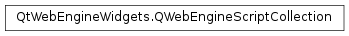

QWebEngineScriptCollection¶
Synopsis¶
Detailed Description¶
The
PySide2.QtWebEngineWidgets.QWebEngineScriptCollectionclass represents a collection of user scripts.
PySide2.QtWebEngineWidgets.QWebEngineScriptCollectionmanages a set of user scripts.Use
QWebEnginePage.scripts()andQWebEngineProfile.scripts()to access the collection of scripts associated with a single page or a number of pages sharing the same profile.
-
PySide2.QtWebEngineWidgets.QWebEngineScriptCollection.clear()¶ Removes all scripts from this collection.
-
PySide2.QtWebEngineWidgets.QWebEngineScriptCollection.contains(value)¶ Parameters: value – PySide2.QtWebEngineWidgets.QWebEngineScriptReturn type: PySide2.QtCore.boolReturns
trueif the collection contains an occurrence ofvalue; otherwise returnsfalse.
-
PySide2.QtWebEngineWidgets.QWebEngineScriptCollection.count()¶ Return type: PySide2.QtCore.intReturns the number of elements in the collection.
-
PySide2.QtWebEngineWidgets.QWebEngineScriptCollection.findScript(name)¶ Parameters: name – unicode Return type: PySide2.QtWebEngineWidgets.QWebEngineScriptReturns the first script found in the collection with the name
name, or a nullPySide2.QtWebEngineWidgets.QWebEngineScriptif none was found.Note
The order in which the script collection is traversed is undefined, which means this should be used when the unicity is guaranteed at the application level.
-
PySide2.QtWebEngineWidgets.QWebEngineScriptCollection.findScripts(name)¶ Parameters: name – unicode Return type: Returns the list of scripts in the collection with the name
name, or an empty list if none was found.
-
PySide2.QtWebEngineWidgets.QWebEngineScriptCollection.insert(arg__1)¶ Parameters: arg__1 – PySide2.QtWebEngineWidgets.QWebEngineScriptInserts the script
sinto the collection.
-
PySide2.QtWebEngineWidgets.QWebEngineScriptCollection.insert(list) Parameters: list – Inserts scripts from the list
listinto the collection.
-
PySide2.QtWebEngineWidgets.QWebEngineScriptCollection.isEmpty()¶ Return type: PySide2.QtCore.boolReturns
trueif the collection is empty; otherwise returnsfalse.
-
PySide2.QtWebEngineWidgets.QWebEngineScriptCollection.remove(arg__1)¶ Parameters: arg__1 – PySide2.QtWebEngineWidgets.QWebEngineScriptReturn type: PySide2.QtCore.boolRemoves
scriptfrom the collection.Returns
trueif the script was found and successfully removed from the collection; otherwise returnsfalse.
-
PySide2.QtWebEngineWidgets.QWebEngineScriptCollection.size()¶ Return type: PySide2.QtCore.intReturns the number of elements in the collection.
-
PySide2.QtWebEngineWidgets.QWebEngineScriptCollection.toList()¶ Return type: Returns a list with the values of the scripts used in this collection.
© 2018 The Qt Company Ltd. Documentation contributions included herein are the copyrights of their respective owners. The documentation provided herein is licensed under the terms of the GNU Free Documentation License version 1.3 as published by the Free Software Foundation. Qt and respective logos are trademarks of The Qt Company Ltd. in Finland and/or other countries worldwide. All other trademarks are property of their respective owners.